Firefox OS Smart TV
background
From June 2014 to September 2015, I was one of two main UX designers responsible for Firefox OS TV UX design (homescreen navigation, browser, design system, remote control, marketplace, etc). I worked closely with design team, PM, developer, business partners from product concept, research, validation, to final implementation.
- Company: Mozilla
- Product Type: Smart TV
- Time: June 2014 - Nov 2015
- Role: UX designer
- Team: 2 UX designer, 1.5 Visual designer, 1 UX researcher
- Responsibilities: Interaction Design, UX spec, User Research, Prototype, Usability Testing
 Project Glance
Project Glance
3
rounds user research
4
design iterations
200+
pages UX spec
Smart TV Home Screen
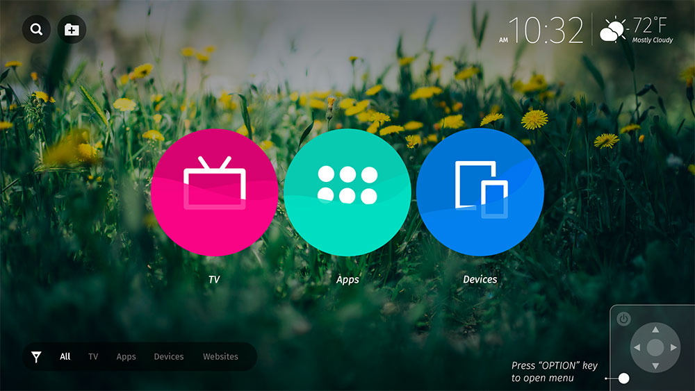
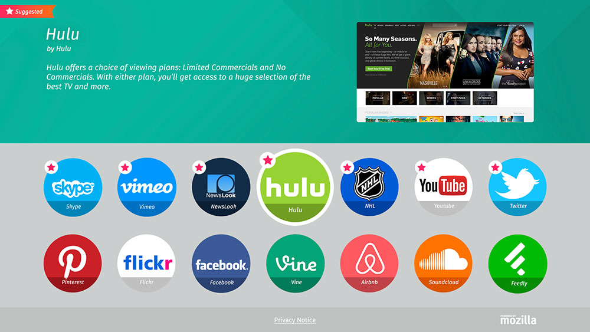
Navigation Model
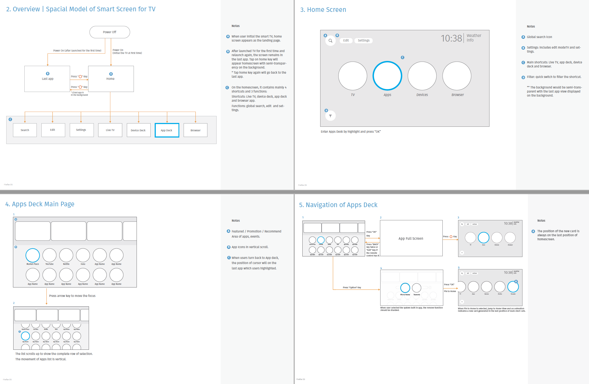 Research
Research
We conducted several rounds of field research and user testing to understand how people use smart TV at home. Some key insights are:
- Convenience vs Privacy: TV is a shared device at home. People want easy access to the content but also want their privacy.
- Efficiency: People want to watch TV or videos as soon as possible after turning on TV. Anything extra steps or animation is unecessary.
- Simple: Watching TV is a relaxing activity. Make the UI clean and simple and always provide a default option.
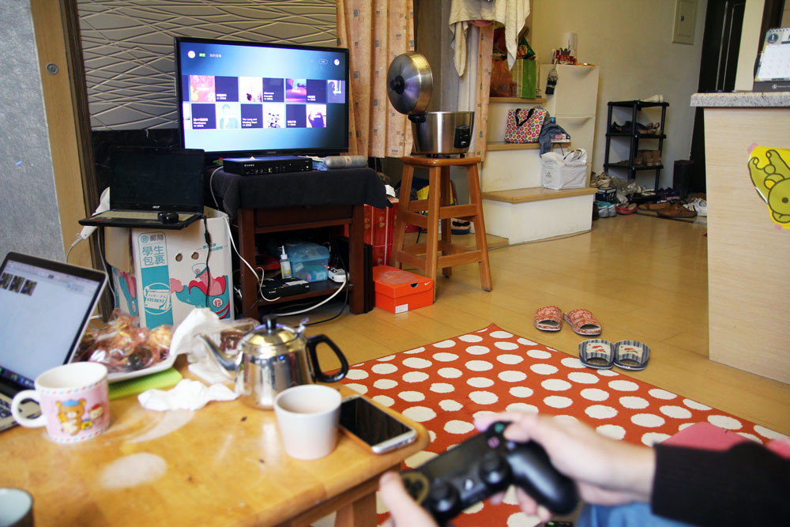
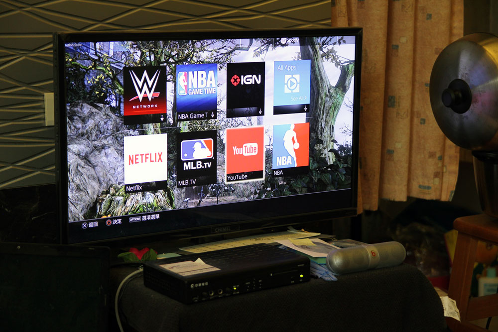
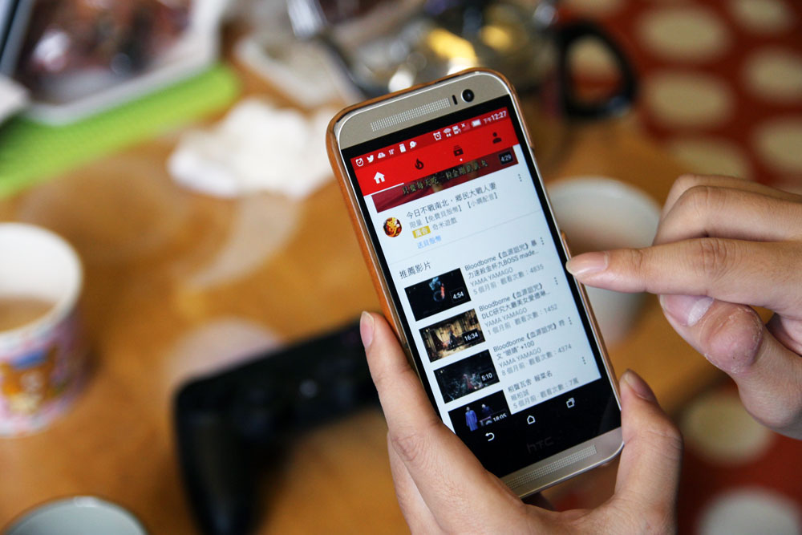
 Design
Design
UX Spec
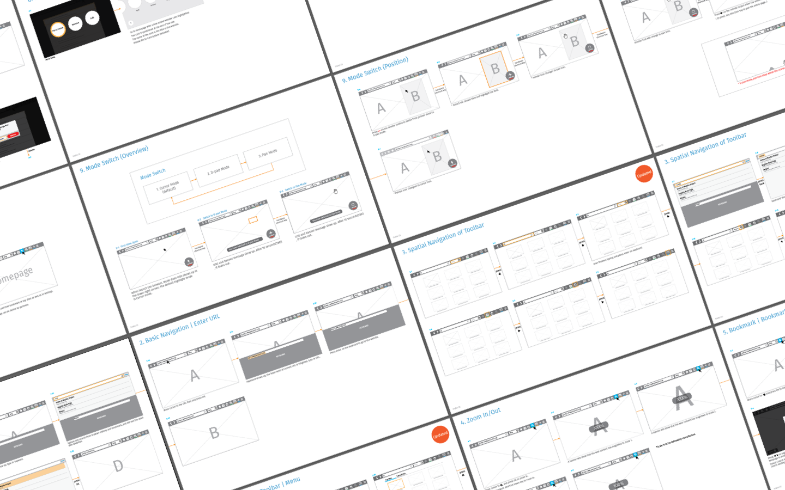Tutorial
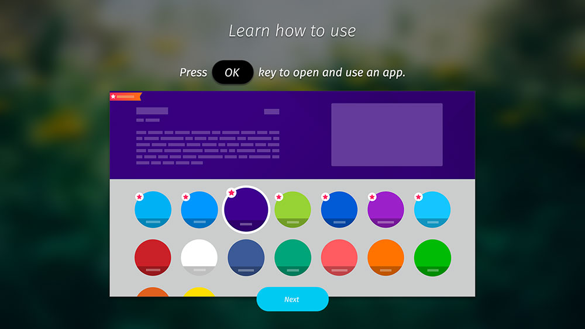
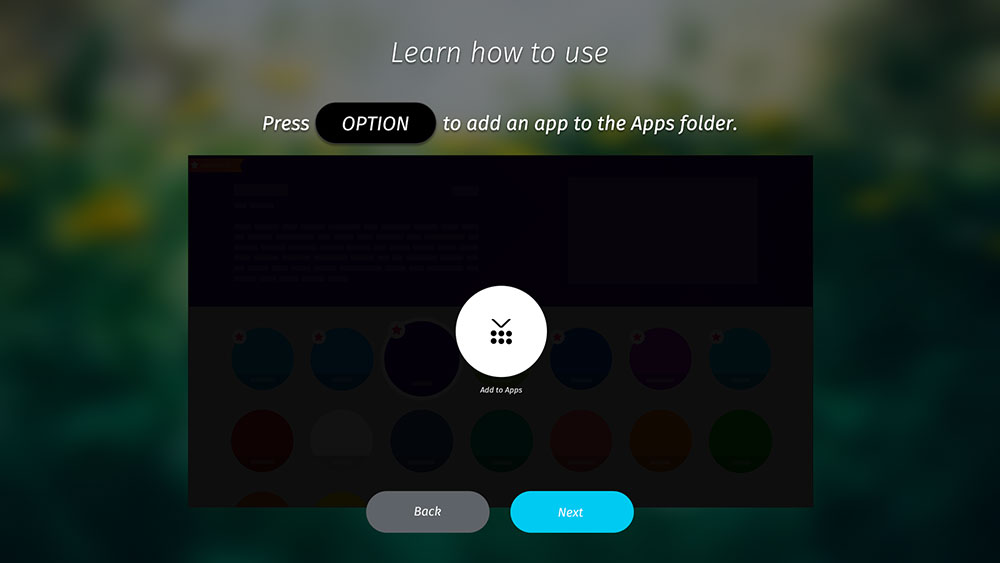
TV Browser
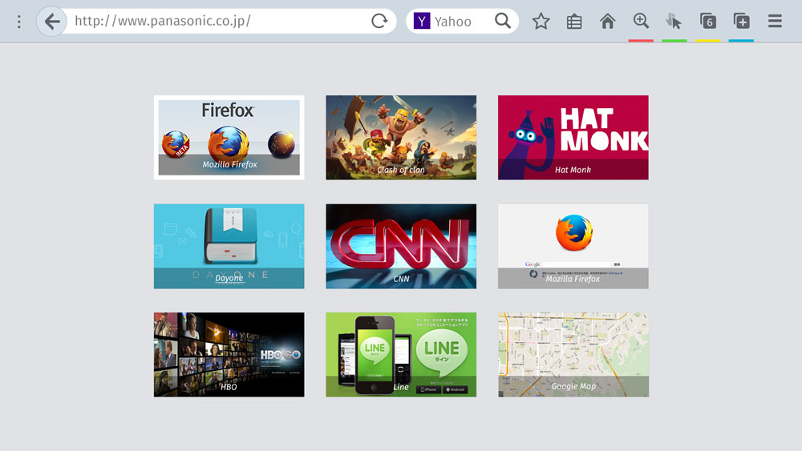
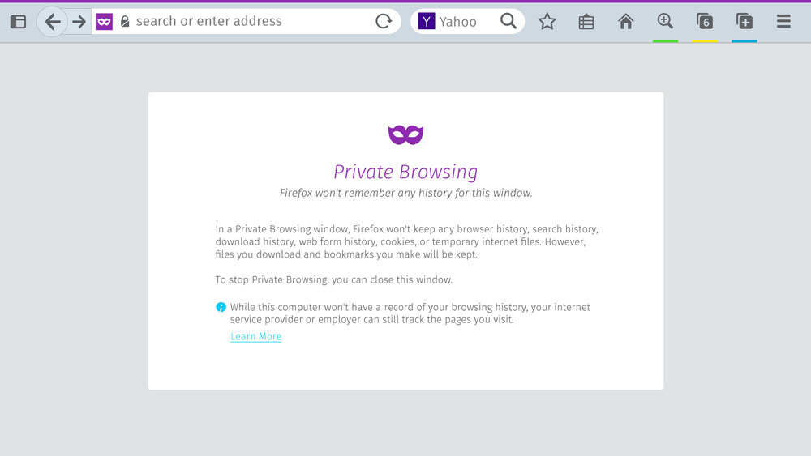
Remote Control
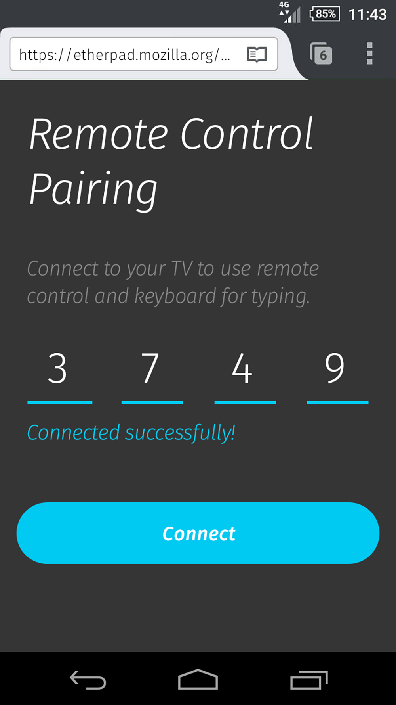
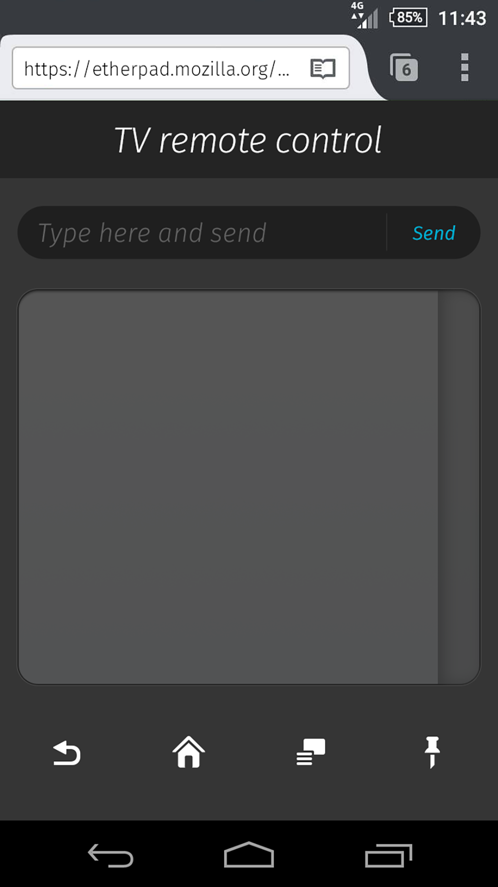